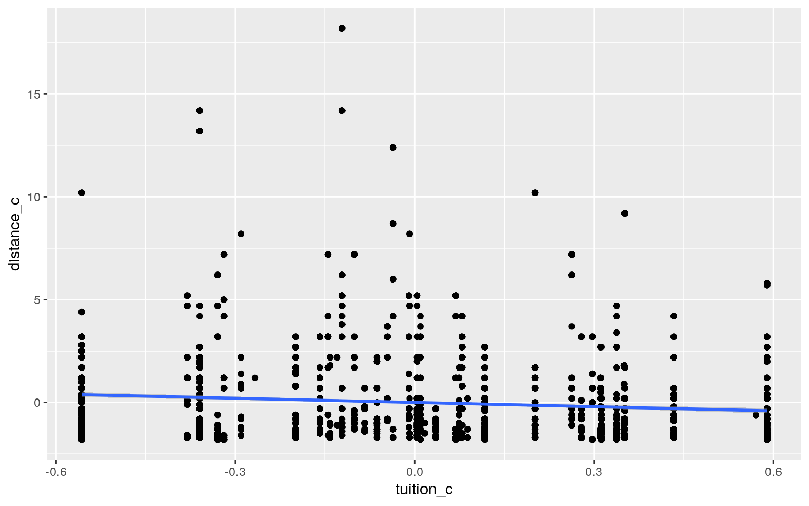

library(dplyr)
library(tidyverse)
library(tidyr)
library(corrplot)
library(cluster)
drop <- c("score", "fcollege", "mcollege", "home", "unemp","region")
CollegeDistance = read.csv("filename.csv")
CDistance=CollegeDistance[,!(names(CollegeDistance)%in%drop)]I have chosen a dataset which included cross-section data conducted by the Department of Education in 1980 regarding the distance of college and included high school students from 1,100 different high schools. The variables I will be analyzing are the distance (distance from a 4-year college), tuition (average state 4-year college tuition) and wage (the state hourly wage in manufacturing in 1980). Specifically, my aim was to analyze how those variables would relate to response variables such as ethnicity (African American, Hispanic, or other) and gender (m/f). Lastly, my two binary variables are income(which is scaled by high/low) and urban, if the school is in an urban area(which is scaled by yes/no). There are 4739 observations in total across 9 variables in the condensed dataset.
man1<-manova(cbind(tuition,distance)~ethnicity, data=CDistance)
summary(man1)## Df Pillai approx F num Df den Df Pr(>F)
## ethnicity 2 0.10169 126.85 4 9472 < 2.2e-16 ***
## Residuals 4736
## ---
## Signif. codes: 0 '***' 0.001 '**' 0.01 '*' 0.05 '.' 0.1
' ' 1summary.aov(man1)## Response tuition :
## Df Sum Sq Mean Sq F value Pr(>F)
## ethnicity 2 50.62 25.3106 241.92 < 2.2e-16 ***
## Residuals 4736 495.49 0.1046
## ---
## Signif. codes: 0 '***' 0.001 '**' 0.01 '*' 0.05 '.' 0.1
' ' 1
##
## Response distance :
## Df Sum Sq Mean Sq F value Pr(>F)
## ethnicity 2 285.2 142.616 27.327 1.584e-12 ***
## Residuals 4736 24716.2 5.219
## ---
## Signif. codes: 0 '***' 0.001 '**' 0.01 '*' 0.05 '.' 0.1
' ' 1pairwise.t.test(CDistance$tuition,CDistance$ethnicity,p.adj="none")##
## Pairwise comparisons using t tests with pooled SD
##
## data: CDistance$tuition and CDistance$ethnicity
##
## afam hispanic
## hispanic <2e-16 -
## other 0.61 <2e-16
##
## P value adjustment method: nonepairwise.t.test(CDistance$distance,CDistance$ethnicity,p.adj="none")##
## Pairwise comparisons using t tests with pooled SD
##
## data: CDistance$distance and CDistance$ethnicity
##
## afam hispanic
## hispanic 1.5e-12 -
## other 6.2e-10 0.0095
##
## P value adjustment method: none0.05/4 #bonferroni## [1] 0.01251-.95^4 #type I error## [1] 0.1854938library(rstatix)
group <- CDistance$ethnicity
DVs <- CDistance %>% dplyr::select(tuition, distance)
sapply(split(DVs,group), mshapiro_test)## afam hispanic other
## statistic 0.7044855 0.6716225 0.7559214
## p.value 5.78903e-35 1.671393e-38 2.546817e-55In total, there was 1 MANOVA test, 1 ANOVA test, and 2 pairwise t-tests, 4 in total, which leaves the probability that there would be, if left unadjusted, one type I error, 0.185. Using the Bonferroni correction, the significance level was adjusted to 0.0125. When analyzing ethnicity, we can see that the variables tuition and cost significantly differ. To test the MANOVA assumptions, the multivariate normality was tested for both groups but yielded a p value across both variables that was less than .05 so we can deduce that the multivariate normality assumption was violated so we did not have to test for the homogeneity. We can reject the null hypothesis that all of the MANOVA assumptions were met.
CDistance%>%dplyr::group_by(urban)%>%
dplyr:: summarize(means=mean(distance))%>%dplyr::summarize("mean_diff:"=diff(means))## # A tibble: 1 x 1
## `mean_diff:`
## <dbl>
## 1 -1.57 rand_dist<-vector()
for(i in 1:5000){ rando<-data.frame(distance=sample(CDistance$distance),urban=CDistance$urban)
rand_dist[i]<-mean(rando[rando$urban=="yes",]$distance)- mean(rando[rando$urban=="no",]$distance)}
mean(rand_dist>-1.5712)*2## [1] 2{hist(rand_dist,main="",ylab=""); abline(v = c(-1.5712, 1.5712),col="red")}t.test(data=CDistance, distance~urban)##
## Welch Two Sample t-test
##
## data: distance by urban
## t = 34.944, df = 4587.8, p-value < 2.2e-16
## alternative hypothesis: true difference in means is not
equal to 0
## 95 percent confidence interval:
## 1.483114 1.659422
## sample estimates:
## mean in group no mean in group yes
## 2.1689133 0.5976449The null hypothesis is that the mean distance is the same for high school students who’s school is in an urban area versus high school students who’s school is not an urban area. The alternate hypothesis is that the mean distance is different for students who’s high school is in an urban area versus a non-urban area. Once performing the randomization test, a small p-value of <2.2e-16 was yielded, allowing us to reject the null hypothesis. Thus, as we can see in the plot, there is a difference in the mean distance for students whose school is located in an urban area versus not in an urban area.
library(sandwich)
library(lmtest)
library(ggplot2)
CDistance$tuition_c <- CDistance$tuition - mean(CDistance$tuition)
CDistance$distance_c <- CDistance$distance - mean(CDistance$distance)
CDistance$wage_c <- CDistance$wage - mean(CDistance$wage)
umfit<-lm(tuition_c~urban*distance_c, data=CDistance)
coeftest(umfit)##
## t test of coefficients:
##
## Estimate Std. Error t value Pr(>|t|)
## (Intercept) 0.0090683 0.0056559 1.6033 0.108925
## urbanyes -0.0773987 0.0237446 -3.2596 0.001123 **
## distance_c -0.0165037 0.0022479 -7.3419 2.466e-13 ***
## urbanyes:distance_c -0.0319212 0.0173263 -1.8424
0.065486 .
## ---
## Signif. codes: 0 '***' 0.001 '**' 0.01 '*' 0.05 '.' 0.1
' ' 1ggplot(CDistance, aes(tuition_c, distance_c)) + geom_point() + geom_smooth(method="lm")
plot(CDistance$tuition_c, CDistance$distance_c)bptest(umfit)##
## studentized Breusch-Pagan test
##
## data: umfit
## BP = 61.768, df = 3, p-value = 2.463e-13resids<-umfit$resid
fitteds<-umfit$fitted.values
ks.test(resids, "pnorm", mean=0, sd(resids))##
## One-sample Kolmogorov-Smirnov test
##
## data: resids
## D = 0.096733, p-value < 2.2e-16
## alternative hypothesis: two-sidedcoeftest(umfit, vcov = vcovHC(umfit))##
## t test of coefficients:
##
## Estimate Std. Error t value Pr(>|t|)
## (Intercept) 0.0090683 0.0056717 1.5989 0.1099179
## urbanyes -0.0773987 0.0225962 -3.4253 0.0006194 ***
## distance_c -0.0165037 0.0018186 -9.0750 < 2.2e-16 ***
## urbanyes:distance_c -0.0319212 0.0168774 -1.8914
0.0586381 .
## ---
## Signif. codes: 0 '***' 0.001 '**' 0.01 '*' 0.05 '.' 0.1
' ' 1summary(umfit)$r.sq## [1] 0.01315201All of the numeric variables involved in the interaction are mean-centered. Analyzing the intercept coefficient, we can see that for the students whose schools are located in an urban area, tend to be located to colleges that are further away from them. When looking at the assumptions of normality (fail to reject null) homoskedasticity (p-value less than 0.05), and linearity (graph is not linear, points are scattered everywhere), we can see from the diagrams that the assumptions were only met for normality and not for the other two tested. The regression results with robust standard errors showed a change in both standard errors and t values but no change in the coefficient estimates. The proportion of variance explained by the linear regression model is 0.01315.
set.seed(326)
boot_dat<- sample_frac(CDistance, replace=T)
samp_distn<-replicate(5000, {
boot_dat <- sample_frac(CDistance, replace=T)
fiit <- lm(tuition_c~urban*distance_c, data=boot_dat)
coef(fiit)
})
samp_distn %>% t %>% as.data.frame %>%summarize_all(sd)## (Intercept) urbanyes distance_c urbanyes:distance_c
## 1 0.005618219 0.02266476 0.001817113 0.01699397Once again, all of the numeric variables involved in the interaction are mean-centered. For the intercept SE and distance SEs, the bootstrapped values decreased slightly from the robust and original SEs. For the urban SE, the value slightly increased.
library(ggplot2)
library(MASS)
cdd<-CDistance%>%dplyr::mutate(income=ifelse(income=="low",0,1))
#CDistance=CDistance %>% dplyr::mutate(income = ifelse(income == "low",0,1))
cdd$distance_c= cdd$distance-mean(cdd$distance)
cdd$wage_c= cdd$wage-mean(cdd$wage)
fitt<-glm(as.factor(income) ~ distance_c + wage_c, data=cdd,family="binomial")
summary(fitt)##
## Call:
## glm(formula = as.factor(income) ~ distance_c + wage_c,
family = "binomial",
## data = cdd)
##
## Deviance Residuals:
## Min 1Q Median 3Q Max
## -1.0172 -0.8626 -0.7766 1.4609 2.3528
##
## Coefficients:
## Estimate Std. Error z value Pr(>|z|)
## (Intercept) -0.91993 0.03253 -28.280 < 2e-16 ***
## distance_c -0.09084 0.01658 -5.481 4.24e-08 ***
## wage_c 0.11920 0.02409 4.947 7.52e-07 ***
## ---
## Signif. codes: 0 '***' 0.001 '**' 0.01 '*' 0.05 '.' 0.1
' ' 1
##
## (Dispersion parameter for binomial family taken to be 1)
##
## Null deviance: 5690.4 on 4738 degrees of freedom
## Residual deviance: 5632.0 on 4736 degrees of freedom
## AIC: 5638
##
## Number of Fisher Scoring iterations: 4coeftest(fitt)##
## z test of coefficients:
##
## Estimate Std. Error z value Pr(>|z|)
## (Intercept) -0.919926 0.032529 -28.2801 < 2.2e-16 ***
## distance_c -0.090843 0.016576 -5.4805 4.241e-08 ***
## wage_c 0.119201 0.024093 4.9474 7.520e-07 ***
## ---
## Signif. codes: 0 '***' 0.001 '**' 0.01 '*' 0.05 '.' 0.1
' ' 1prob<-predict(fitt,type="response")
predict<-ifelse(prob>.5,1,0)
table(prediction=predict,truth=CDistance$income)%>%addmargins## truth
## prediction high low Sum
## 0 1365 3374 4739
## Sum 1365 3374 4739(3374/4739) #acc## [1] 0.7119645(1365/1365) #tpr/sens## [1] 1(3374/3374) #tnr/spec## [1] 1(1365/4739) #ppv## [1] 0.2880355library(plotROC)
library(ggplot2)
plotROC <- ggplot(CDistance) + geom_roc(aes(d=income, m=prob), n.cuts=0) + geom_segment(aes(x=0, xend=1, y=0, yend=1),lty=2)
plotROCcalc_auc(plotROC)## PANEL group AUC
## 1 1 -1 0.4335654cdd$logit<-predict(fitt)
cdd$income<-factor(CDistance$income,levels=c("high","low"))
head(cdd)## X gender ethnicity urban wage distance tuition education
income tuition_c distance_c wage_c
## 1 1 male other yes 8.09 0.2 0.88915 12 high 0.07454177
-1.60287 -1.410506
## 2 2 female other yes 8.09 0.2 0.88915 12 low 0.07454177
-1.60287 -1.410506
## 3 3 male other yes 8.09 0.2 0.88915 12 low 0.07454177
-1.60287 -1.410506
## 4 4 male afam yes 8.09 0.2 0.88915 12 low 0.07454177
-1.60287 -1.410506
## 5 5 female other yes 8.09 0.4 0.88915 13 low 0.07454177
-1.40287 -1.410506
## 6 6 male other yes 8.09 0.4 0.88915 12 low 0.07454177
-1.40287 -1.410506
## logit
## 1 -0.9424494
## 2 -0.9424494
## 3 -0.9424494
## 4 -0.9424494
## 5 -0.9606180
## 6 -0.9606180ggplot(cdd,aes(logit,fill=income))+geom_density(alpha=.3)+geom_vline(xintercept=0,lty=2)When the students family’s income is high and corresponds to the variables distance and wage, the intercept coefficient shows us that the binary variable income is predicted to be -0.9199. When we hold the variable wage constant, with every 1 unit increase in the variable distance, results in a -.09084 decrease in distance. On the other hand, there’s a 0.1192 increase in the binary variable income with every 1 unit increase in distance, keeping wage constant. The accuracy of the logistic model is 0.711 (proportion of low income over total). The sensitivity(tpr/proportion of students whose family income is high reported correctly) and specification(tnr/ proportion of students whose family income is high reported incorrectly) values are both 1 which stands for the true positive and true negative rate respectively. The ppv was calculated to be 0.288. The AUC was calculated to be 0.433, which is bad. The low AUC value tells us that it is hard to predict if a student’s familial income would be high or low based off of how far a college is located from them, and the state hourly wage in manufacturing.
library(tidyverse); library(lmtest)
class_diag<-function(probs,truth){
tab<-table(factor(probs>.5,levels=c("FALSE","TRUE")),truth)
acc=sum(diag(tab))/sum(tab)
sens=tab[2,2]/colSums(tab)[2]
spec=tab[1,1]/colSums(tab)[1]
ppv=tab[2,2]/rowSums(tab)[2]
f1=2*(sens*ppv)/(sens+ppv)
if(is.numeric(truth)==FALSE & is.logical(truth)==FALSE){
truth<-as.numeric(truth)-1}
#CALCULATE EXACT AUC
ord<-order(probs, decreasing=TRUE)
probs <- probs[ord]; truth <- truth[ord]
TPR=cumsum(truth)/max(1,sum(truth))
FPR=cumsum(!truth)/max(1,sum(!truth))
dup<-c(probs[-1]>=probs[-length(probs)], FALSE)
TPR<-c(0,TPR[!dup],1); FPR<-c(0,FPR[!dup],1)
n <- length(TPR)
auc<- sum( ((TPR[-1]+TPR[-n])/2) * (FPR[-1]-FPR[-n]) )
data.frame(acc,sens,spec,ppv,f1,auc)
}
yep <- cdd %>% dplyr::select(-gender, -ethnicity, -urban, -wage, -distance, -tuition, -education)
fitl<-glm(income~.,data=yep,family="binomial")
coeftest(fitl)##
## z test of coefficients:
##
## Estimate Std. Error z value Pr(>|z|)
## (Intercept) 1.0091e+00 4.0887e-02 24.6808 < 2.2e-16 ***
## X -2.1797e-05 5.8937e-06 -3.6983 0.0002170 ***
## tuition_c -3.6471e-01 1.1559e-01 -3.1551 0.0016044 **
## distance_c 8.4550e-02 1.6604e-02 5.0922 3.54e-07 ***
## wage_c -8.7573e-02 2.5960e-02 -3.3734 0.0007424 ***
## logit NA NA NA NA
## ---
## Signif. codes: 0 '***' 0.001 '**' 0.01 '*' 0.05 '.' 0.1
' ' 1probab <- predict(fitl, data="response")
class_diag(probab,yep$income)## acc sens spec ppv f1 auc
## low 0.7012028 0.9596918 0.06227106 0.7166888 0.8205778
0.5792071set.seed(1234)#10fold
k=10
date<-yep[sample(nrow(yep)),]
folds<-cut(seq(1:nrow(yep)),breaks=k,labels=F)
diags<-NULL
for(i in 1:k){
college<-date[folds!=i,]
test<-date[folds==i,]
truth<-test$income
fitl<-glm(income~distance_c+tuition_c,data=yep,family="binomial")
probs<-predict(fitl,newdata = test,type="response")
diags<-rbind(diags,class_diag(probs,truth))
}
diags%>%summarize_all(mean)## acc sens spec ppv f1 auc
## 1 0.7119642 1 0 0.7119642 0.8316813 0.5574837library(glmnet) #lasso
matrix <- as.matrix(yep$income)
cddlast <- model.matrix(income ~ ., data=yep)[,-1]
head(cddlast)## X tuition_c distance_c wage_c logit
## 1 1 0.07454177 -1.60287 -1.410506 -0.9424494
## 2 2 0.07454177 -1.60287 -1.410506 -0.9424494
## 3 3 0.07454177 -1.60287 -1.410506 -0.9424494
## 4 4 0.07454177 -1.60287 -1.410506 -0.9424494
## 5 5 0.07454177 -1.40287 -1.410506 -0.9606180
## 6 6 0.07454177 -1.40287 -1.410506 -0.9606180cv<- cv.glmnet(cddlast, matrix, family="binomial")
lasso_fit <- glmnet(cddlast, matrix, family="binomial", lambda = cv$lambda.1se)
coef(lasso_fit)## 6 x 1 sparse Matrix of class "dgCMatrix"
## s0
## (Intercept) 0.9049446
## X 0.0000000
## tuition_c .
## distance_c .
## wage_c .
## logit .set.seed(1234) #cvlasso
k=10
data<-yep[sample(nrow(yep)),]
folds<-cut(seq(1:nrow(yep)),breaks=k,labels=F)
diags<-NULL
for(i in 1:k){
train<-data[folds!=i,]
test<-data[folds==i,]
truth<-test$income
fit<-glm(income~tuition_c+wage_c+distance_c, data=yep, family = "binomial")
probs<-predict(fit,newdata = test,type="response")
diags<-rbind(diags,class_diag(probs,truth))
}
summarize_all(diags, mean)## acc sens spec ppv f1 auc
## 1 0.7119642 1 0 0.7119642 0.8316813 0.5696846The in-sample values calculated for accuracy, TPR(sensitivity), TNR(specificity), PPV(precision) and AUC are respectively: 0.7012, 0.9596, 0.0622, 0.7166, and 0.8205. The AUC is a very good value. For the 10-fold CV, the out-sample values calculated for accuracy, TPR, TNR, PPV, and AUC are respectively: 0.7119, 1, 0, 0.7119, 0.8316, 0.5574. The AUC in this case was bad and decreased compared to the in-sample classification. After running the LASSO regression having input all the variables as predictors, the variables to be retained were the most crucial predictors of income and should’ve had values next to them. None of the variables had any value next to them which tells us that no variable was a good predictor in familial income. A 10-fold CV was then performed on all of the variables regardless and yielded accuracy, TPR, TNR, PPV, and AUC values of: 0.7119, 1, 0, 0.7119, 0.8316, and 0.5696. The accuracy remained the same from the previous logistic test with only a slight increase in AUC, which was still a very poor value.